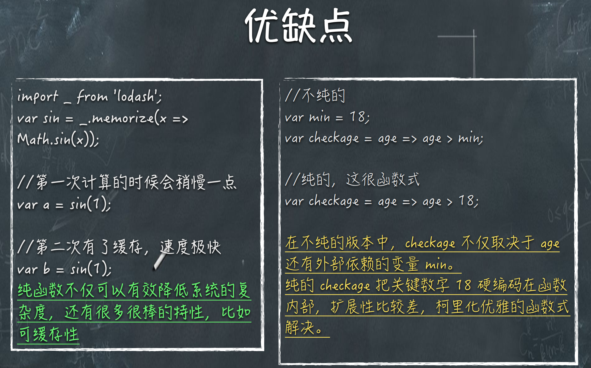
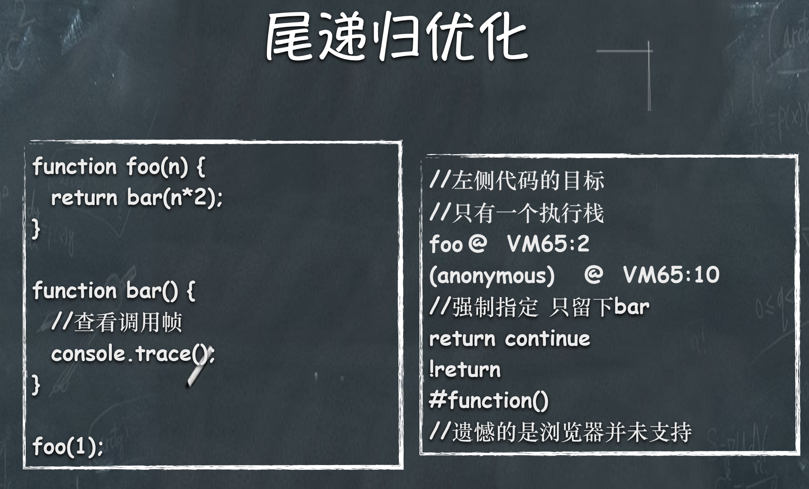
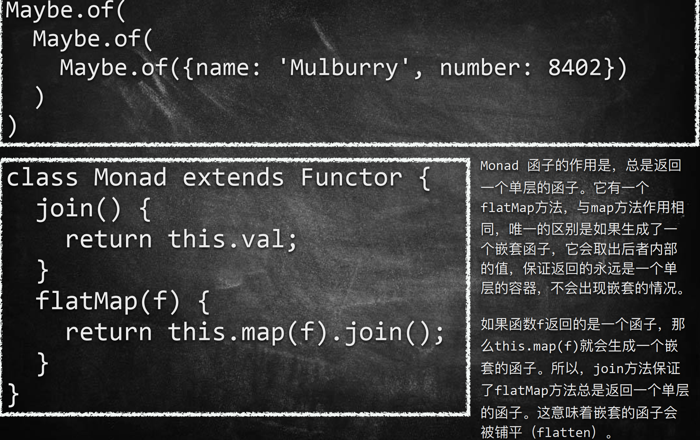

# 函数式编程
# 概述
- 函数式编程思维
- 函数式编程常用核心概念
- 当下函数式编程最热的库
- 函数式编程的实际应用场景
# 函数式编程思维
# 范畴论
1.函数式编程是范畴论的数学分支是一门很复杂的数学， 认为世界上所有概念体系都可以抽象出一个个范畴。
2.彼此之间存在某种关系概念、事物、对象等等，都构 成范畴。任何事物只要找出他们之间的关系，就能定义。
3.箭头表示范畴成员之间的关系，正式的名称叫做"态射" （morphism）。范畴论认为，同一个范畴的所有成员， 就是不同状态的"变形"（transformation）。通过"态射"， 一个成员可以变形成另一个成员。
# 函数式编程基础理论
1.函数式编程（Functional Programming）其实相对于计算机的历史 而言是一个非常古老的概念，甚至早于第一台计算机的诞生。函 数式编程的基础模型来源于 λ (Lambda x=>x*2)演算，而 λ 演算并 非设计于在计算机上执行，它是在 20 世纪三十年代引入的一套用 于研究函数定义、函数应用和递归的形式系统。
2.函数式编程不是用函数来编程，也不是传统的面向过程编程。主 旨在于将复杂的函数符合成简单的函数（计算理论，或者递归论， 或者拉姆达演算）。运算过程尽量写成一系列嵌套的函数调用。
3.JavaScript 是披着 C 外衣的 Lisp。
4.真正的火热是随着React的高阶函数而逐步升温。
特点:
1.函数是一等公民。所谓”第一等公民”（first class），指的是函数 与其他数据类型一样，处于平等地位，可以赋值给其他变量，也 可以作为参数，传入另一个函数，或者作为别的函数的返回值。
2.不可改变量。在函数式编程中，我们通常理解的变量在函数式 编程中也被函数代替了：在函数式编程中变量仅仅代表某个表达 式。这里所说的’变量’是不能被修改的。所有的变量只能被赋一次初值。
3.map & reduce他们是最常用的函数式编程的方法。
总结
- 函数是”第一等公民”
- 只用”表达式"，不用"语句" (表达式会产生一个值)
- 没有”副作用"
- 不修改状态
- 引用透明（函数运行只靠参数）
# 函数式编程常用核心概念
- 纯函数
- 偏应用函数、函数的柯里化
- 函数组合
- Point Free
- 声明式与命令式代码
- 惰性求值
# 纯函数
- 对于相同的输入，永远会得到相同的输出，而且没有任何可观察的副作用，也不依赖外部环境的状态。
- var xs = [1,2,3,4,5];
// Array.slice是纯函数，因为它没有副作用，对于固定的输入，输出总是固定的
xs.slice(0,3);
xs.slice(0,3);
xs.splice(0,3);
xs.splice(0,3); 
# 纯度和幂等性
- 幂等性是指执行无数次后还具有相同的效果，同一的参数运行一次函数应该与连续两次结果一致。幂等性在函数式编程中与纯度相关，但有不一致。
- Math.abs(Math.abs(-42))
# 偏应用函数
- 传递给函数一部分参数来调用它，让它返回一个函数去处理剩下的参数。
- 偏函数之所以“偏”，在就在于其只能处理那些能与至少一个case语句匹配的输入，而不能处理所有可能的输入。
// 带⼀个函数参数 和 该函数的部分参数
const partial = (f, ...args) =>
(...moreArgs) =>
f(...args, ...moreArgs)
const add3 = (a, b, c) => a + b + c
// 偏应⽤ `2` 和 `3` 到 `add3` 给你⼀个单参数的函数
const fivePlus = partial(add3, 2, 3)
fivePlus(4)
//bind实现
const add1More = add3.bind(null, 2, 3) // (c) => 2 + 3 + c
2
3
4
5
6
7
8
9
10
11
12
# 函数的柯里化
- 柯里化(Curried) 通过偏应用函数实现。
- 传递给函数一部分参数来调用它，让它返回一个函数去处理剩下的参数。
- 用柯里化来改
var checkage = min => (age => age > min);
var checkage18 = checkage(18);
checkage18(20);
// 柯⾥化之前
function add(x, y) {
return x + y;
}
add(1, 2) // 3
// 柯⾥化之后
function addX(y) {
return function (x) {
return x + y;
};
}
addX(2)(1) // 3
2
3
4
5
6
7
8
9
10
11
12
事实上柯里化是一种“预加载”函数的方法，通过传递较少的参数， 得到一个已经记住了这些参数的新函数，某种意义上讲，这是一种 对参数的“缓存”，是一种非常高效的编写函数的方法.
# 函数组合
- 纯函数以及如何把它柯里化写出的洋葱代码 h(g(f(x)))，为了解决函数嵌套的问题，我们需要用到“函数组合”：
- 用柯里化来改，让多个函数像拼积木一样
const compose = (f, g) => (x => f(g(x)));
var first = arr => arr[0];
var reverse = arr => arr.reverse();
var last = compose(first, reverse);
last([1,2,3,4,5]);
# Point Free
- 把一些对象自带的方法转化成纯函数,不要命名转瞬即逝的中间变量。
- 这种风格能够帮助我们减少不必要的命名，让代码保持简洁和通用。
var toUpperCase = word => word.toUpperCase();
var split = x => (str => str.split(x));
var f = compose(split(' '), toUpperCase);
f("abcd efgh");
# 声明式与命令式代码
- 命令式代码的意思就是，我们通过编写一条又一条指令去让计算机执行一些动作，这其中一般都会涉及到很多繁杂的细节。而声明式就要优雅很多了，我们通过写表达式的方式来声明我们想干什么，而不是通过一步一步的指示。
//命令式
let CEOs = [];
for(var i = 0; i < companies.length; i++)
CEOs.push(companies[i].CEO)
}
//声明式
let CEOs = companies.map(c => c.CEO);
2
3
4
5
6
7
函数式编程的一个明显的好处就是这种声明式的代码，对于无副作用的纯函数，我们完全可以不考虑函数内部是如何实现的，专注于编写业务代码。优化代码时，目光只需要集中在这些稳定坚固的函数内部即可。
相反，不纯的函数式的代码会产生副作用或者依赖外部系统环境，使用它们的时候总是要考虑这些不干净的副作用。在复杂的系统中，这对于程序员的心智来说是极大的负担。
# 惰性求值、惰性函数、惰性链
惰性链可以添加一个输入对象的状态，从而能够将这些输入转换为所需的输出操作链接在一起。与简单的数组操作不一样，尽管他是一个复杂的程序，但仍然可以避免创建任何变量，并且有效消除所有循环。且在最后调用value之前并不会真正的执行任何操作。这就是所谓的惰性链。
当输入很大但只有一个小的子集有效时，避免不必要的函数调用，就是所谓的惰性求值。惰性求值方法有很多如组合子（alf-类似于||先计算fun1 如果返回值是false、null、underfined就不再执行fun2、memoization、shortcut funsion），但是目的都是一样的，即尽可能的推迟求值，直到依赖的表达式被调用。
# 深入
- 高阶函数
- 尾调用优化PTC
- 闭包
- 容器、Functor
- 错误处理、Either、AP
- IO
- Monad
# 高阶函数
- 函数当参数，把传入的函数做一个封装，然后返回这个封装函数,达到更高程度的抽象。
- 它是一等公民
- 它已一个函数作为参数
- 已一个函数作为返回结果
# 尾调用优化
- 指函数内部的最后一个动作是函数调用。该调用的返回值，直接返回给函数。。函数调用自身，称为递归。如果尾调用自身，就称为尾递归。递归需要保存大量的调用记录，很容易发生栈溢出错误，如果使用尾递归优化，将递归变为循环，那么只需要保存一个调用记录，这样就不会发生栈溢出错误了。
// 不是尾递归，无法优化 斐波那契数列 普通递归
function factorial(n) {
if (n === 1) return 1;
return n * factorial(n - 1);
}
function factorial(n, total) {
if (n === 1) return total;
return factorial(n - 1, n * total);
} //ES6强制使用尾递归
2
3
4
5
6
7
8
9
10
普通递归时，内存需要记录调用的堆栈所出的深度和位置信息。在最底层计算返回值，再根据记录的信息，跳回上一层级计算，然后再跳回更高一层，依次运行，直到最外层的调用函数。在cpu计算和内存会消耗很多，而且当深度过大时，会出现堆栈溢出
尾递归，整个计算过程是线性的，调用一次sum(x, total)后，会进入下一个栈，相关的数据信息和跟随进入，不再放在堆栈上保存。当计算完最后的值之后，直接返回到最上层的sum(5,0)。这能有效的防止堆栈溢出。
在ECMAScript 6，我们将迎来尾递归优化，通过尾递归优化，javascript代码在解释成机器码的时候，将会向while看起，也就是说，同时拥有数学表达能力和while的效能。 
尾递归问题？
1.尾递归的判断标准是函数运行【最后一步】是否调用自身， 而不是是否在函数的【最后一行】调用自身,最后一行调用其他 函数 并返回叫尾调用。
2.按道理尾递归调用调用栈永远都是更新当前的栈帧而已，这 样就完全避免了爆栈的危险。但是现如今的浏览器并未完全支 持☹原因有二 ①在引擎层面消除递归是一个隐式的行为，程序 员意识不到。②堆栈信息丢失了 开发者难已调试。
3.既然浏览器不支持我们可以把这些递归写成while
# 闭包
- 如下例子，虽然外层的 makePowerFn 函数执行完毕，栈上的调用 帧被释放，但是堆上的作用域并不被释放，因此 power 依旧可以 被 powerFn 函数访问，这样就形成了闭包
function makePowerFn(power) {
function powerFn(base) {
return Math.pow(base, power);
}
return powerFn;
}
var square = makePowerFn(2);
square(3); // 9
2
3
4
5
6
7
8
# 正式
范畴与容器
- 1.我们可以把”范畴”想象成是一个容器，里面包含两样东西。值 （value）、值的变形关系，也就是函数。
- 2.范畴论使用函数，表达范畴之间的关系。
- 3.伴随着范畴论的发展，就发展出一整套函数的运算方法。这套方法 起初只用于数学运算，后来有人将它在计算机上实现了，就变成了今 天的”函数式编程"。
- 4.本质上，函数式编程只是范畴论的运算方法，跟数理逻辑、微积分、 行列式是同一类东西，都是数学方法，只是碰巧它能用来写程序。为 什么函数式编程要求函数必须是纯的，不能有副作用？因为它是一种 数学运算，原始目的就是求值，不做其他事情，否则就无法满足函数 运算法则了
范畴与容器
1.函数不仅可以用于同一个范畴之中值的转换，还可以用于将 一个范畴转成另一个范畴。这就涉及到了函子（Functor）。
2.函子是函数式编程里面最重要的数据类型，也是基本的运算 单位和功能单位。它首先是一种范畴，也就是说，是一个容 器，包含了值和变形关系。比较特殊的是，它的变形关系可 以依次作用于每一个值，将当前容器变形成另一个容器。
# 容器、Functor（函子）
- $(...) 返回的对象并不是一个原生的 DOM 对象，而是对于原生对 象的一种封装，这在某种意义上就是一个“容器”（但它并不函数 式）。
- Functor（函子）遵守一些特定规则的容器类型。
- Functor 是一个对于函数调用的抽象，我们赋予容器自己去调用 函数的能力。把东西装进一个容器，只留出一个接口 map 给容 器外的函数，map 一个函数时，我们让容器自己来运行这个函数， 这样容器就可以自由地选择何时何地如何操作这个函数，以致于 拥有惰性求值、错误处理、异步调用等等非常牛掰的特性。
任何具有map方法的数据结构，都可以当作函子的实现。
var Container = function(x) {
this.__value = x;
}
//函数式编程一般约定，函子有一个of方法
Container.of = x => new Container(x);
//Container.of(‘abcd’);
//一般约定，函子的标志就是容器具有map方法。该方法将容器
里面的每一个值，映射到另一个容器。
Container.prototype.map = function(f){
return Container.of(f(this.__value))
}
Container.of(3)
.map(x => x + 1) //结果 Container(4)
.map(x => 'Result is ' + x); //结果 Container('Result is 4')
2
3
4
5
6
7
8
9
10
11
12
13
14
class Functor {
constructor(val) {
this.val = val;
}
map(f) {
return new Functor(f(this.val));
}
}
(new Functor(2)).map(function (two) {
return two + 2;
});
// Functor(4)
2
3
4
5
6
7
8
9
10
11
12
上面代码中，Functor是一个函子，它的map方法接受函数f作为 参数，然后返回一个新的函子，里面包含的值是被f处理过的 （f(this.val)）。
一般约定，函子的标志就是容器具有map方法。该方法将容器里 面的每一个值，映射到另一个容器。
上面的例子说明，函数式编程里面的运算，都是通过函子完成， 即运算不直接针对值，而是针对这个值的容器----函子。函子本 身具有对外接口（map方法），各种函数就是运算符，通过接口 接入容器，引发容器里面的值的变形。
因此，学习函数式编程，实际上就是学习函子的各种运算。由 于可以把运算方法封装在函子里面，所以又衍生出各种不同类 型的函子，有多少种运算，就有多少种函子。函数式编程就变 成了运用不同的函子，解决实际问题.
你可能注意到了，上面生成新的函子的时候，用了 new命令。这实在太不像函数式编程了，因为new命令是 面向对象编程的标志。
函数式编程一般约定，函子有一个of方法，用来生成新的容器.
# Maybe 函子
函子接受各种函数，处理容器内部的值。这里就有一个问题，容器内部的值可能是一个 空值（比如null），而外部函数未必有处理空值的机制，如果传入空值，很可能就会出错。
Functor.of(null).map(function (s) {
return s.toUpperCase();
});
// TypeError
class Maybe extends Functor {
map(f) {
return this.val ? Maybe.of(f(this.val)) : Maybe.of(null);
}
}
Maybe.of(null).map(function (s) {
return s.toUpperCase();
});
// Maybe(null)
2
3
4
5
6
7
8
9
10
11
12
13
# 错误处理、Either
1.我们的容器能做的事情太少了，try/catch/throw 并不是 “纯”的，因为它从外部接管了我们的函数，并且在这个 函数出错时抛弃了它的返回值。
2.Promise 是可以调用 catch 来集中处理错误的。
3.事实上 Either 并不只是用来做错误处理的，它表示了逻辑或，范畴学里的 coproduc。
# Either
条件运算if...else是最常见的运算之一，函数式编程里面，使用 Either 函子表达。 Either 函子内部有两个值：左值（Left）和右值（Right）。右值是正常情况下使用的 值，左值是右值不存在时使用的默认值。
class Either extends Functor {
constructor(left, right) {
this.left = left;
this.right = right;
}
map(f) {
return this.right ?
Either.of(this.left, f(this.right)) :
Either.of(f(this.left), this.right);
}
}
Either.of = function (left, right) {
return new Either(left, right);
};
2
3
4
5
6
7
8
9
10
11
12
13
14
Left 和 Right 唯一的区别就在于 map 方法的实 现，Right.map 的行为和我们之前提到的 map 函数一 样。但是 Left.map 就很不同了：它不会对容器做任 何事情，只是很简单地把这个容器拿进来又扔出去。 这个特性意味着，Left 可以用来传递一个错误消息。
var getAge = user => user.age ? Right.of(user.age) :
Left.of("ERROR!");
getAge({name: 'stark', age: '21'}).map(age => 'Age is ' + age);
//=> Right('Age is 21')
getAge({name: 'stark'}).map(age => 'Age is ' + age);
//=> Left('ERROR!')
2
3
4
5
6
Left 可以让调用链中任意一环的错误立刻返回到调用链的尾部， 这给我们错误处理带来了很大的方便，再也不用一层又一层的try/catch。
# AP因子
1.函子里面包含的值，完全可能是函数。我们可以想象 这样一种情况，一个函子的值是数值，另一个函子的值 是函数。
class Ap extends Functor {
ap(F) {
return Ap.of(this.val(F.val));
}
}
Ap.of(addTwo).ap(Functor.of(2))
2
3
4
5
6
# IO
1.真正的程序总要去接触肮脏的世界。
function readLocalStorage(){
return window.localStorage;
}
2.IO 跟前面那几个 Functor 不同的地方在于，它的 __value 是一个函数。 它把不纯的操作（比如 IO、网络请求、DOM）包裹到一个函数内，从而 延迟这个操作的执行。所以我们认为，IO 包含的是被包裹的操作的返回 值。
3.IO其实也算是惰性求值。
- IO负责了调用链积累了很多很多不纯的操作，带来的复杂性和不可维护性
import _ from 'lodash';
var compose = _.flowRight;
var IO = function(f) {
this.__value = f;
}
IO.of = x => new IO(_ => x);
IO.prototype.map = function(f) {
return new IO(compose(f, this.__value))
};
//es6
import _ from 'lodash';
var compose = _.flowRight;
class IO extends Monad{
map(f){
return IO.of(compose(f, this.__value))
}
}
2
3
4
5
6
7
8
9
10
11
12
13
14
15
16
17
var fs = require('fs');
var readFile = function(filename) {
return new IO(function() {
return fs.readFileSync(filename, 'utf-8');
});
};
readFile('./user.txt')
.flatMap(tail)
.flatMap(print)
// 等同于
readFile('./user.txt')
.chain(tail)
.chain(print)
2
3
4
5
6
7
8
9
10
11
12
13
# Monad
- 1.Monad就是一种设计模式，表示将一个运算过程，通过 函数拆解成互相连接的多个步骤。你只要提供下一步运算 所需的函数，整个运算就会自动进行下去。
- 2.Promise 就是一种 Monad。
- 3.Monad 让我们避开了嵌套地狱，可以轻松地进行深度嵌 套的函数式编程，比如IO和其它异步任务。
- 4.记得让上面的IO集成Monad 
# 函数式编程库
流行的几大函数式编程库
- RxJS
- cycleJS
- lodashJS、lazy(惰性求值)
- underscoreJS
- ramdajs
# Rxjs
Rxjs 从诞生以来一直都不温不火，但它函数响应式编程 （Functional Reactive Programming，FRP）的理念非常先进， 虽然或许对于大部分应用环境来说，外部输入事件并不是 太频繁，并不需要引入一个如此庞大的 FRP 体系，但我们 也可以了解一下它有哪些优秀的特性.
在 Rxjs 中，所有的外部输入（用户输入、网络请求等等）都被视作一 种 『事件流』：
用户点击了按钮 --> 网络请求成功 --> 用户键盘输入 --> 某个定时事件 发生 —> 这种事件流特别适合处理游戏，上上下下上上下下 举个最简单的例子，下面这段代码会监听点击事件，每 2 次点击事件 产生一次事件响应：
var clicks = Rx.Observable
.fromEvent(document, 'click')
.bufferCount(2)
.subscribe(x => console.log(x)); // 打印出前2次点击事件
响应式编程是继承自函数式编程，声明式的，不可变的，没有副作用的 是函数式编程的三大护法。其中不可变武功最高深。一直使用面向对象 范式编程的我们，习惯了用变量存储和追踪程序的状态。RxJS从函数式 编程范式中借鉴了很多东西，比如链式函数调用，惰性求值等等。
在函数中与函数作用域之外的一切事物有交互的就产生了副作用。比如 读写文件，在控制台打印语句，修改页面元素的css等等。在RxJS中，把 副作用问题推给了订阅者来解决。
# Cycle.js
Cycle.js 是一个基于 Rxjs 的框架，它是一个彻彻底底的 FRP 理念的框架， 和 React 一样支持 virtual DOM、JSX 语法，但现在似乎还没有看到大型 的应用经验。
本质的讲，它就是在 Rxjs 的基础上加入了对 virtual DOM、容器和组件 的支持，比如下面就是一个简单的『开关』按钮：
function main(sources) {
const sinks = {
DOM: sources.DOM.select('input').events('click')
.map(ev => ev.target.checked)
.startWith(false)
.map(toggled =>
<div>
<input type="checkbox" /> Toggle me
<p>{toggled ? 'ON' : 'off'}</p>
</div>
)
};
return sinks;
}
const drivers = {
DOM: makeDOMDriver('#app')
};
run(main, drivers);
2
3
4
5
6
7
8
9
10
11
12
13
14
15
16
17
18
# Underscore.js
Underscore 是一个 JavaScript 工具库，它提供了一整套函数式编程 的实用功能，但是没有扩展任何 JavaScript 内置对象。 他解决了 这个问题：“如果我面对一个空白的 HTML 页面，并希望立即开始 工作，我需要什么？” 他弥补了 jQuery 没有实现的功能，同时又 是 Backbone 必不可少的部分。
Underscore 提供了100多个函数，包括常用的：map、filter、invoke — 当然还有更多专业的辅助函数，如：函数绑定、JavaScript 模板 功能、创建快速索引、强类型相等测试等等。
# Lodash.js
lodash是一个具有一致接口、模块化、高性能等特性的JavaScript工 具库，是underscore.js的fork，其最初目标也是“一致的跨浏览器行 为。。。，并改善性能”。
lodash采用延迟计算，意味着我们的链式方法在显式或者隐式的 value()调用之前是不会执行的，因此lodash可以进行shortcut（捷 径） fusion（融合）这样的优化，通过合并链式大大降低迭代的次 数，从而大大提升其执行性能。 就如同jQuery在全部函数前加全局的$一样，lodash使用全局的_来 提供对工具的快速访问。
# Ramdajs
ramda是一个非常优秀的js工具库，跟同类比 更函数式主要体现在 以下几个原则
1.ramda里面的提供的函数全部都是curry的 意味着函数没有默认参 数可选参数从而减轻认知函数的难度。
ramda推崇pointfree简单的说是使用简单函数组合实现一个复杂 功能，而不是单独写一个函数操作临时变量。
ramda有个非常好用的参数占位符 R._ 大大减轻了函数在pointfree 过程中参数位置的问题
相比underscore/lodash 感觉要干净很多.
# 函数式编程应用场景
- 易调试、热部署、并发
- 单元测试
- 总结与补充
# 易调试、热部署、并发
1.函数式编程中的每个符号都是 const 的，于是没有什么函数会有副作用。 谁也不能在运行时修改任何东西，也没有函数可以修改在它的作用域之外修 改什么值给其他函数继续使用。这意味着决定函数执行结果的唯一因素就是 它的返回值，而影响其返回值的唯一因素就是它的参数。
2.函数式编程不需要考虑”死锁"（deadlock），因为它不修改变量，所以根本 不存在"锁"线程的问题。不必担心一个线程的数据，被另一个线程修改，所 以可以很放心地把工作分摊到多个线程，部署"并发编程"（concurrency）。
3.函数式编程中所有状态就是传给函数的参数，而参数都是储存在栈上的。 这一特性让软件的热部署变得十分简单。只要比较一下正在运行的代码以及 新的代码获得一个diff，然后用这个diff更新现有的代码，新代码的热部署就 完成了.
# 单元测试
严格函数式编程的每一个符号都是对直接量或者表达式结果的引用， 没有函数产生副作用。因为从未在某个地方修改过值，也没有函数修 改过在其作用域之外的量并被其他函数使用（如类成员或全局变量）。 这意味着函数求值的结果只是其返回值，而惟一影响其返回值的就是 函数的参数。
这是单元测试者的梦中仙境(wet dream)。对被测试程序中的每个函数， 你只需在意其参数，而不必考虑函数调用顺序，不用谨慎地设置外部 状态。所有要做的就是传递代表了边际情况的参数。如果程序中的每 个函数都通过了单元测试，你就对这个软件的质量有了相当的自信。 而命令式编程就不能这样乐观了，在 Java 或 C++ 中只检查函数的返 回值还不够——我们还必须验证这个函数可能修改了的外部状态.
# 总结与补充
函数式编程不应被视为灵丹妙药。相反，它应 该被视为我们现有工具箱的一个很自然的补充 —— 它带来了更高的可组合性，灵活性以及容错 性。现代的JavaScript库已经开始尝试拥抱函数式编 程的概念以获取这些优势。Redux 作为一种 FLUX 的变种实现，核心理念也是状态机和函数式编程.
← JavaScript 精粹 同源和跨域 →